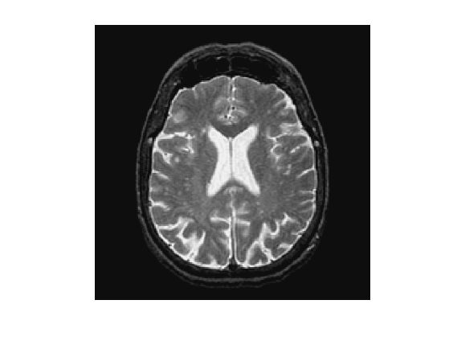
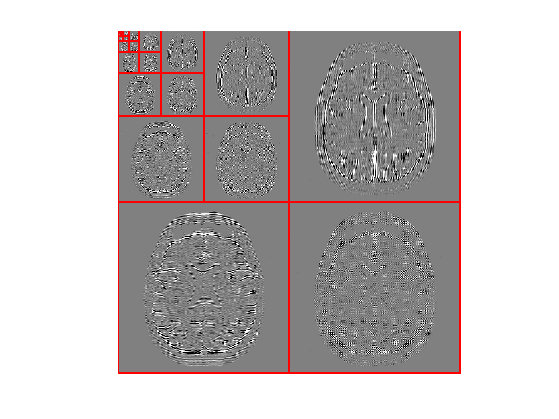
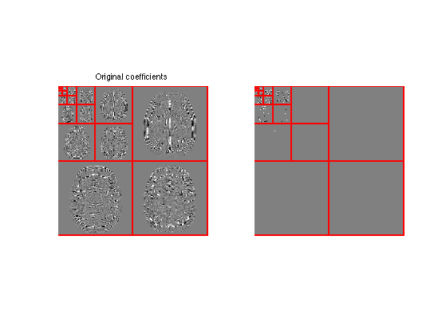
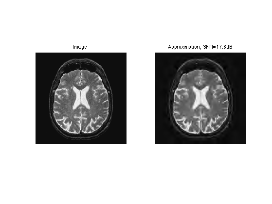
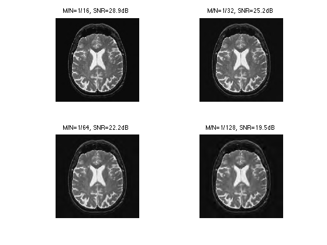
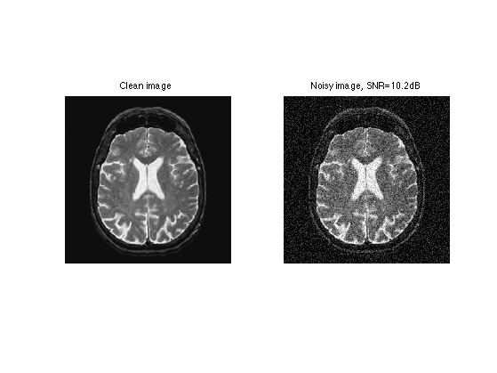
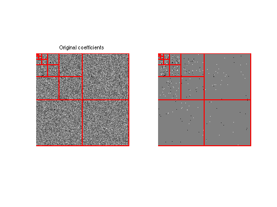
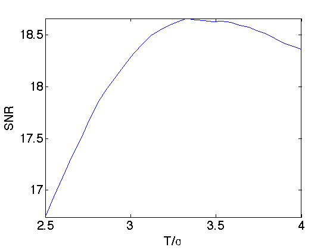
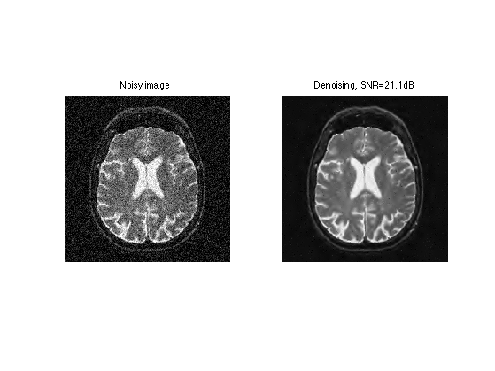

Image Processing with Wavelets
This numerical tour overviews the use of wavelets for image approximation and denoising.
Contents
Installing toolboxes and setting up the path.
You need to download the following files: signal toolbox and general toolbox.
You need to unzip these toolboxes in your working directory, so that you have toolbox_signal and toolbox_general in your directory.
For Scilab user: you must replace the Matlab comment '%' by its Scilab counterpart '//'.
Recommandation: You should create a text file named for instance numericaltour.sce (in Scilab) or numericaltour.m (in Matlab) to write all the Scilab/Matlab command you want to execute. Then, simply run exec('numericaltour.sce'); (in Scilab) or numericaltour; (in Matlab) to run the commands.
Execute this line only if you are using Matlab.
getd = @(p)path(p,path); % scilab users must *not* execute this
Then you can add the toolboxes to the path.
getd('toolbox_signal/'); getd('toolbox_general/');
Wavelet Approximation
Image approximation is obtained by thresholding wavelets coefficients.
First we load an image \(f \in \mathbb{R}^N\) of \(N = n_0 \times n_0\) pixels.
name = 'cortex';
n0 = 512;
f = load_image(name,n0);
f = rescale( sum(f,3) );
Display it.
clf; imageplot(f);
An orthogonal wavelet basis \( \mathcal{B} = \{ \psi_{j,n}^k \}_{j,n} \) of \(\mathbb{R}^N\) is composed of multiscale atoms parameterized by their scale \(2^j\), position \(2^j n \in [0,1]^2\) and orentation \( k \in \{H,V,D\}\).
A forward wavelet transform computes the set of inner products \[ \Psi f = \{ \langle f,\psi_{j,n}^k\rangle \} \in \mathbb{R}^N \] where the wavelet atoms are defined as \[ \psi_{j,n}^k(x) = \psi^k\left( \frac{x - 2^j n}{2^j} \right). \]
Set the minimum scale for the transform.
Jmin = 0;
A short-cut for the wavelet transform \(\Psi\):
Psi = @(f)perform_wavelet_transf(f,Jmin,+1);
A short-cut for the inverse wavelet transform \(\Psi^{-1} = \Psi^*\):
PsiS = @(fw)perform_wavelet_transf(fw,Jmin,-1);
Perform the wavelet transform to compute \(\Psi f\).
fW = Psi(f);
Display the transformed coefficients.
clf; plot_wavelet(fW);
To perform non-linear image approximation, one remove the small amplitude coefficients. This is performed using a hard thresholding \[ H_T(f,\mathcal{B}) = \Psi^{-1} \circ H_T \circ \Psi (f) = \sum_{|\langle f,\psi_{j,n}^k\rangle| > T} \langle f,\psi_{j,n}^k\rangle \psi_{j,n}^k. \]
\(T\) should be adapted to ensure a given number \(M\) of non-zero coefficients, and then \(f_M = H_T(f,\mathcal{B})\) is the best \(M\) terms approximation of \(f\) in \(\mathcal{B}\).
Select a threshold.
T = .5;
Shortcut for the thresholding operator \(H_T\).
Thresh = @(fW,T)fW .* (abs(fW)>T);
Perform hard thresholding of the coefficients.
fWT = Thresh(fW,T);
Exercice 1: (check the solution) Compute the ratio \(M/N\) of non-zero coefficients.
exo1;
Ratio of non-zero coefficients : M/N = 0.00481.
Display the thresholded coefficients.
clf;
subplot(1,2,1);
plot_wavelet(fW);
title('Original coefficients');
subplot(1,2,2);
plot_wavelet(fWT);
 Perform reconstruction using the inverse wavelet transform \(\Psi^*\).
f1 = PsiS(fWT);
Display approximation.
clf; imageplot(f, 'Image', 1,2,1); imageplot(clamp(f1), strcat(['Approximation, SNR=' num2str(snr(f,f1),3) 'dB']), 1,2,2);
Number of coefficients for the approximation.
M = n0^2/16;
Exercice 2: (check the solution) Compute a threshold \(T\) to keep only \(M\) coefficients.
exo2;
Perform hard thresholding.
fWT = Thresh(fW,T);
Check the number of non-zero coefficients in fWT.
disp(strcat([' M=' num2str(M)])); disp(strcat(['|fWT|_0=' num2str(sum(fWT(:)~=0))]));
M=16384 |fWT|_0=16384
Exercice 3: (check the solution) Compute an approximation with an decreasing number of coefficients.
exo3;
Orthognal Wavelet Denoising
Image denoising is obtained by thresholding noisy wavelets coefficielts.
Here we consider a simple setting where we intentionnaly add some noise \(w\) to a clean image \(f\) to obtain \( y = f + w \).
A denoiser computes an estimate \(\tilde f\) of \(f\) from the observations \(y\) alone. In the mathematical model, since \(y\) is a random variable depending on \(w\), so is \(\tilde f\). A mathematical evaluation of the efficiency of the denoiser is the average risk \(E_w( \|f-\tilde f\|^2 )\).
Here we consider a single realization of the noise, so we replace the risk by the oracle error \( \|f-\tilde f\|^2\). This allows us to bench the efficiency of the denoising methods by comparing the result to \(f\). But you have to keep in mind that for real application, one does not have access to \(f\).
We consider a Gaussian white noise \(w\) of variance \(\sigma^2\).
sigma = .1;
Generate a noisy image.
y = f + randn(n0,n0)*sigma;
Display.
clf; imageplot(f, 'Clean image', 1,2,1); imageplot(clamp(y), ['Noisy image, SNR=' num2str(snr(f,y),3) 'dB'], 1,2,2);
A denoising is obtained by thresholding the wavelet coefficients \[ \tilde f = H_T(f,\mathcal{B}). \]
The asymptotically optimal threshold of Donoho and Johnstone is \(T = \sqrt{2 \log(N)} \sigma\). In practice, one observes that much better result are obtained using \(T \approx 3 \sigma\).
Compute the noisy wavelet coefficients.
fW = Psi(y);
Compute the threshold value using the \(3\sigma\) heuristic.
T = 3*sigma;
Perform hard thresholding.
fWT = Thresh(fW,T);
Display the thresholded coefficients.
clf;
subplot(1,2,1);
plot_wavelet(fW);
title('Original coefficients');
subplot(1,2,2);
plot_wavelet(fWT);
 Perform reconstruction.
f1 = PsiS(fWT);
Display denoising.
clf; imageplot(clamp(y), 'Noisy image', 1,2,1); imageplot(clamp(f1), strcat(['Denoising, SNR=' num2str(snr(f,f1),3) 'dB']), 1,2,2);
Exercice 4: (check the solution) Try to optimize the value of the threshold \(T\) to get the best possible denoising result.
exo4;
Translation Invariant Denoising
The quality of orthogonal denoising is improved by adding translation invariance. This corresponds to denoising translated copies of the image.
The translation of an image is \((\theta_\tau f)(x) = f(x-\tau)\), where we use periodic boundary conditions.
Given a set \( \Omega \subset \mathbb{R}^2 \), the \(\Omega\)-translation invariant denoising is defined as: \[ \tilde f = \frac{1}{\Omega}\sum_{\tau \in \Omega} \theta_{-\tau} \left( H_T( \theta_\tau y, \mathcal{B} ) \right). \]
Here we consider translation of integer pixels in \(\{0,\ldots,\tau_{\max}-1\}\). The number of translations is thus \( \tau_{\max}^2\).
tau_max = 8;
Generate a set of translation vectors \(\Omega = \{ \tau_i = (X_i,Y_i) \}_i\).
[Y,X] = meshgrid(0:tau_max-1,0:tau_max-1);
A "trick" to compute the full denoising image after all translations is to initialize \(\tilde f = 0\), and then accumulate each denoising with translate \(\tau_i\) in the following way: \[ \tilde f \longleftarrow \frac{i-1}{i} \tilde f + \frac{1}{i} \theta_{-\tau_i} \left( H_T( \theta_{\tau_i} y, \mathcal{B} ) \right) \]
Initialize the denoised image \(\tilde f\) as 0.
f1 = zeros(n0,n0);
Initialize the translation index.
i = 1;
Translate the image to obtain \(\theta_{\tau_i}(f)\) for \(\tau_i = (X_i,Y_i)\), with periodic boundary conditions.
fTrans = circshift(y,[X(i) Y(i)]);
Denoise this translated image, to obtain \(H_T(\theta_{\tau_i} f,\mathcal{B})\).
fTrans = PsiS( Thresh( Psi(fTrans) ,T) );
Translate back.
fTrans = circshift(fTrans,-[X(i) Y(i)]);
Accumulate the result.
f1 = (i-1)/i*f1 + fTrans/i;
Exercice 5: (check the solution) Compute the full denoising by cycling through the \(i\) indices.
exo5;
Exercice 6: (check the solution) Determine the optimal threshold \(T\) for this translation invariant denoising.
exo6;
Exercice 7: (check the solution) Test on other images.
exo7;